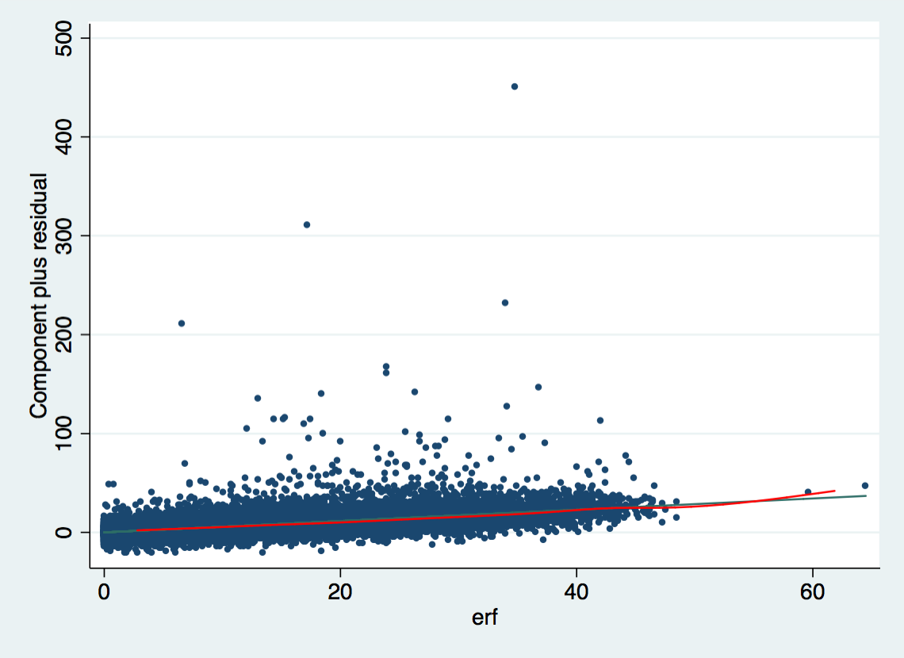
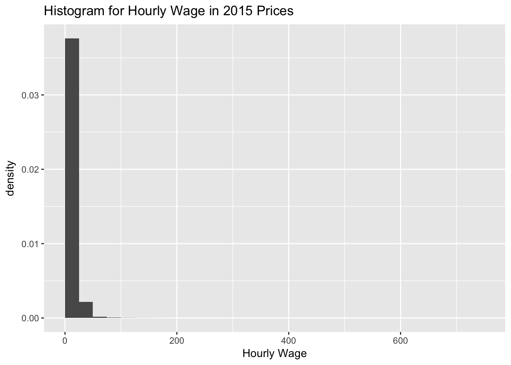

Exercise 2
Questions
2.1 Estimate a Linear Regression with SOEP Data using hourly wage
hwagebas dependent variable for the year 2015. Include years of schoolingpgbilzeitand work experienceerfas predictor variables and genderfrauand regionostas additional controls.2.2 Interpret the coefficients and the value of R²
2.3 Is the relationship between work experience and wage linear?
2.4 Specifiy the same regression model but use the natural logarithm as dependent variable instead.
2.5 How large is the gender pay gap?
Data Prep
Stata
use "_data/ex_mydf.dta", clear
* Unplausible Beobachtungen identifizieren
********************************************************************************
twoway (scatter hwageb pgtatzeit, msymbol(point) jitter(2))
* Visualize Income
********************************************************************************
histogram hwageb if asample==1, bin(25)
sum hwageb if asample==1, d
twoway (scatter hwageb pgtatzeit, msymbol(point) jitter(2)) if asample==1
. use "_data/ex_mydf.dta", clear
(PGEN: Feb 12, 2017 13:00:53-1 DBV32L)
.
. * Unplausible Beobachtungen identifizieren
. *****************************************************************************
> ***
. twoway (scatter hwageb pgtatzeit, msymbol(point) jitter(2))
.
. * Visualize Income
. *****************************************************************************
> ***
. histogram hwageb if asample==1, bin(25)
(bin=25, start=0, width=30.855825)
. sum hwageb if asample==1, d
Hourly Brutto Income in 2015 Prices
-------------------------------------------------------------
Percentiles Smallest
1% 2.169231 0
5% 5.403614 0
10% 7.005816 0 Obs 305,838
25% 9.983869 0 Sum of Wgt. 305,838
50% 14.00146 Mean 16.06223
Largest Std. Dev. 11.46355
75% 19.18718 525.431
90% 26.40982 556.8619 Variance 131.413
95% 32.53085 559.2414 Skewness 8.248211
99% 54.21809 771.3956 Kurtosis 224.3553
. twoway (scatter hwageb pgtatzeit, msymbol(point) jitter(2)) if asampl
> e==1
. R
Load Data
ex_mydf <- readRDS(file = "_data/ex_mydf.rds")
asample <- ex_mydf %>%
filter(pgtatzeit >= 6,
!is.na(pgtatzeit),
alter %>% dplyr::between(18, 65),
!is.na(alter),
pgemplst %in% c(1,2,4),
pop < 3
) %>%
# filter unplausible cases
mutate(na = case_when(
pid %in% c(1380202, 1380202, 607602, 2555301) ~ 1,
pid == 8267202 & syear == 2007 ~ 1,
pid == 2633801 & syear == 2006 ~ 1,
pid == 2582901 & syear > 2006 ~ 1 )
) %>%
filter(is.na(na)) %>%
select(hwageb, lnwage, pgbilzeit, cpgbilzeit, erf, cerf, frau, ost, phrf, syear )
asample15 <- asample %>% filter(syear == 2015)Descriptive Pre - Analysis
unplausible Cases
# to do: show id if wage above 600
ex_mydf %>%
select(pgtatzeit, hwageb) %>%
drop_na() %>%
ggplot(aes(x=pgtatzeit, y=hwageb)) +
geom_point(position = "jitter", size = 0.21)
# nochmal scatter
ggplot(asample, aes(x=pgbilzeit, y=hwageb)) +
geom_point(position = "jitter", size = 0.21,
na.rm = T)
visualize Income
Histogram
summary(asample$hwageb)## Min. 1st Qu. Median Mean 3rd Qu. Max. NA's
## 0 6 10 12 14 767 19 qplot(hwageb, geom="histogram",
binwidth = 25,
main = "Histogram for Hourly Wage",
xlab = "Hourly Wage in Prices from 2015",
fill=I("grey"),
col=I("black"),
alpha= I(.2),
xlim=c(0,500),
ylim= c(0,125000),
data = asample)
# alternative
# without ..density it would be counts
g_hist_wage <- asample %>%
ggplot(aes(x = hwageb, y = ..density..)) +
geom_histogram(breaks = seq(0,767.4, by = 25)) +
labs(title="Histogram for Hourly Wage in 2015 Prices",
x="Hourly Wage")
g_hist_wage
hist(asample$hwageb, probability = T)
for 2015
summary of hourly wage and yrs of schooling, work exp, etc.
asample %>%
filter(syear == 2015) %>%
select(hwageb, pgbilzeit, erf, frau, ost) %>%
drop_na() %>% # optional if complete.obs is specified
cor(use = "complete.obs")## hwageb pgbilzeit erf frau ost
## hwageb 1.00 0.366 0.210 -0.182 -0.113
## pgbilzeit 0.37 1.000 -0.104 0.037 0.042
## erf 0.21 -0.104 1.000 -0.275 0.075
## frau -0.18 0.037 -0.275 1.000 0.016
## ost -0.11 0.042 0.075 0.016 1.000 asample %>%
filter(syear == 2015) %>%
ggplot(aes(pgbilzeit, hwageb)) +
geom_point(na.rm=T, position = "jitter")
Answers
2.1 Basic Model
Estimate a Linear Regression with SOEP Data using hourly wage hwageb as dependent variable for the year 2015. Include years of schooling pgbilzeit and work experience erf as predictor variables and gender frau and region ost as additional controls.
Note: STATA command if e(sample): In STATA, there is a practical command if e(sample) that lets you restrict new calculations to the observations that were used in a model calculated before. In this exercise this can be used to calculate centralized coefficients for education and compare two models with each other, making sure that they are based on the same observations. In this exercise, the basic model is calculated first (2.1) and then another model is run with the same sample, but with centralized years of education and work experience (2.1c) in order to be able to interpret the intercept in a theoretically coherent way.
Note2: STATA - R Difference concerning weights in regression models. STATA and R handle weights with the value of 0 differently. While STATA drops these observations by default, R does not. In theory, weights of 0 should not exist, because sampling weights are supposed to be the inverse of the probability of being sampled. In survey data, sampling weights of 0 can be included because the weights are adjusted in various ways. If you want to include cases with 0 weights in STATA regressions you need to use the svy option as described here. If, on the other hand you want to exclude them from the R model, you can use a filter before modeling (e.g. filter(phrf > 0)). For the basic model in this exercise both ways are shown here (First without 0-weight observations, then with).
Stata
basic model
without weights0 cases:
Linear regression Number of obs = 14,218
F(4, 14213) = 259.84
Prob > F = 0.0000
R-squared = 0.2253
Root MSE = 10.072
------------------------------------------------------------------------------
| Robust
hwageb | Coef. Std. Err. t P>|t| [95% Conf. Interval]
-------------+----------------------------------------------------------------
pgbilzeit | 1.638184 .0619018 26.46 0.000 1.516848 1.75952
erf | .2431915 .0109426 22.22 0.000 .2217425 .2646405
frau | -2.754198 .2425546 -11.35 0.000 -3.229636 -2.278759
ost | -4.278906 .2718054 -15.74 0.000 -4.81168 -3.746132
_cons | -6.573576 .7699179 -8.54 0.000 -8.082716 -5.064436
------------------------------------------------------------------------------Note: r markdown text with STATA output: Here is an example where I copied the output of the STATA regression into the R markdown in order to make it easy to compare it to the R output in the next tab. Because the STATA implementation in R markdown is not perfect yet, you cannot print single things in specific places but only run the code and see all of the output afterwards –> see tab “full code”. (This is partly due to the fact that R runs STATA from shell and certain features are not available there).
basic model II
with weights0 cases:
Survey: Linear regression
Number of strata = 1 Number of obs = 14,300
Number of PSUs = 14,300 Population size = 33,885,938
Design df = 14,299
F( 4, 14296) = 259.86
Prob > F = 0.0000
R-squared = 0.2253
------------------------------------------------------------------------------
| Linearized
hwageb | Coef. Std. Err. t P>|t| [95% Conf. Interval]
-------------+----------------------------------------------------------------
pgbilzeit | 1.638184 .0618931 26.47 0.000 1.516866 1.759503
erf | .2431915 .0109411 22.23 0.000 .2217455 .2646375
frau | -2.754198 .2425205 -11.36 0.000 -3.229569 -2.278826
ost | -4.278906 .2717671 -15.74 0.000 -4.811605 -3.746207
_cons | -6.573576 .7698095 -8.54 0.000 -8.082503 -5.06465
------------------------------------------------------------------------------Note: r markdown text with STATA output: Here is an example where I copied the output of the STATA regression into the R markdown in order to make it easy to compare it to the R output in the next tab. Because the STATA implementation in R markdown is not perfect yet, you cannot print single things in specific places but only run the code and see all of the output afterwards –> see tab “full code”. (This is partly due to the fact that R runs STATA from shell and certain features are not available there).
centered model
without weights0 cases:
Linear regression Number of obs = 14,218
F(4, 14213) = 259.84
Prob > F = 0.0000
R-squared = 0.2253
Root MSE = 10.072
------------------------------------------------------------------------------
| Robust
hwageb | Coef. Std. Err. t P>|t| [95% Conf. Interval]
-------------+----------------------------------------------------------------
cpgbilzeit | 1.638184 .0619018 26.46 0.000 1.516848 1.75952
cerf | .2431915 .0109426 22.22 0.000 .2217425 .2646405
frau | -2.754198 .2425546 -11.35 0.000 -3.229636 -2.278759
ost | -4.278906 .2718054 -15.74 0.000 -4.81168 -3.746132
_cons | 18.51181 .2143393 86.37 0.000 18.09168 18.93194
------------------------------------------------------------------------------ Note: r markdown text with STATA output: Here is an example where I copied the output of the STATA regression into the R markdown in order to make it easy to compare it to the R output in the next tab. Because the STATA implementation in R markdown is not perfect yet, you cannot print single things in specific places but only run the code and see all of the output afterwards –> see tab “full code”. (This is partly due to the fact that R runs STATA from shell and certain features are not available there).
centered model II
with weights0 cases:
Survey: Linear regression
Number of strata = 1 Number of obs = 14,300
Number of PSUs = 14,300 Population size = 33,885,938
Design df = 14,299
F( 4, 14296) = 259.86
Prob > F = 0.0000
R-squared = 0.2253
------------------------------------------------------------------------------
| Linearized
hwageb | Coef. Std. Err. t P>|t| [95% Conf. Interval]
-------------+----------------------------------------------------------------
cpgbilzeit | 1.638184 .0618931 26.47 0.000 1.516866 1.759503
cerf | .2431915 .0109411 22.23 0.000 .2217455 .2646374
frau | -2.754198 .2425205 -11.36 0.000 -3.229569 -2.278826
ost | -4.278906 .2717671 -15.74 0.000 -4.811605 -3.746207
_cons | 18.51659 .2143495 86.39 0.000 18.09644 18.93674
------------------------------------------------------------------------------
Note: r markdown text with STATA output: Here is an example where I copied the output of the STATA regression into the R markdown in order to make it easy to compare it to the R output in the next tab. Because the STATA implementation in R markdown is not perfect yet, you cannot print single things in specific places but only run the code and see all of the output afterwards –> see tab “full code”. (This is partly due to the fact that R runs STATA from shell and certain features are not available there).
Full Code
use "_data/ex_mydf.dta", clear
* 2.1 basic model, no 0-weights
********************************************************************************
reg hwageb pgbilzeit erf frau ost if asample==1 & syear==2015 [pw=phrf]
* sum bildungszeit only for sample of last estimation
cap drop cpgbilzeit
sum pgbilzeit if e(sample)
gen cpgbilzeit = pgbilzeit - r(mean)
cap drop cerf
sum erf if e(sample)
gen cerf = erf -r(mean)
sum pgbilzeit cpgbilzeit if e(sample)
sum erf cerf if e(sample)
* 2.1c model with centered predictors, no 0-weights
reg hwageb cpgbilzeit cerf frau ost if asample==1 & syear==2015 [pw=phrf]
* 2.1 basic model, with 0-weights
********************************************************************************
svyset [pw=phrf]
svy: reg hwageb pgbilzeit erf frau ost if asample==1 & syear==2015
* sum bildungszeit only for sample of last estimation
cap drop cpgbilzeit
sum pgbilzeit if e(sample)
gen cpgbilzeit = pgbilzeit - r(mean)
cap drop cerf
sum erf if e(sample)
gen cerf = erf -r(mean)
sum pgbilzeit cpgbilzeit if e(sample)
sum erf cerf if e(sample)
* 2.1c model with centered predictors, with 0-weights
svy: reg hwageb cpgbilzeit cerf frau ost if asample==1 & syear==2015
. use "_data/ex_mydf.dta", clear
(PGEN: Feb 12, 2017 13:00:53-1 DBV32L)
.
. * 2.1 basic model, no 0-weights
. *****************************************************************************
> ***
. reg hwageb pgbilzeit erf frau ost if asample==1 & syear==2015 [pw=phrf]
(sum of wgt is 3.3886e+07)
Linear regression Number of obs = 14,218
F(4, 14213) = 259.84
Prob > F = 0.0000
R-squared = 0.2253
Root MSE = 10.072
------------------------------------------------------------------------------
| Robust
hwageb | Coef. Std. Err. t P>|t| [95% Conf. Interval]
-------------+----------------------------------------------------------------
pgbilzeit | 1.638184 .0619018 26.46 0.000 1.516848 1.75952
erf | .2431915 .0109426 22.22 0.000 .2217425 .2646405
frau | -2.754198 .2425546 -11.35 0.000 -3.229636 -2.278759
ost | -4.278906 .2718054 -15.74 0.000 -4.81168 -3.746132
_cons | -6.573576 .7699179 -8.54 0.000 -8.082716 -5.064436
------------------------------------------------------------------------------
.
. * sum bildungszeit only for sample of last estimation
. cap drop cpgbilzeit
. sum pgbilzeit if e(sample)
Variable | Obs Mean Std. Dev. Min Max
-------------+---------------------------------------------------------
pgbilzeit | 14,218 12.85849 2.77797 7 18
. gen cpgbilzeit = pgbilzeit - r(mean)
(27,340 missing values generated)
.
. cap drop cerf
. sum erf if e(sample)
Variable | Obs Mean Std. Dev. Min Max
-------------+---------------------------------------------------------
erf | 14,218 16.53353 10.91589 0 64.48
. gen cerf = erf -r(mean)
(13,804 missing values generated)
.
. sum pgbilzeit cpgbilzeit if e(sample)
Variable | Obs Mean Std. Dev. Min Max
-------------+---------------------------------------------------------
pgbilzeit | 14,218 12.85849 2.77797 7 18
cpgbilzeit | 14,218 1.03e-08 2.77797 -5.858489 5.141511
. sum erf cerf if e(sample)
Variable | Obs Mean Std. Dev. Min Max
-------------+---------------------------------------------------------
erf | 14,218 16.53353 10.91589 0 64.48
cerf | 14,218 1.35e-07 10.91589 -16.53353 47.94647
.
. * 2.1c model with centered predictors, no 0-weights
. reg hwageb cpgbilzeit cerf frau ost if asample==1 & syear==2015 [pw=phrf]
(sum of wgt is 3.3886e+07)
Linear regression Number of obs = 14,218
F(4, 14213) = 259.84
Prob > F = 0.0000
R-squared = 0.2253
Root MSE = 10.072
------------------------------------------------------------------------------
| Robust
hwageb | Coef. Std. Err. t P>|t| [95% Conf. Interval]
-------------+----------------------------------------------------------------
cpgbilzeit | 1.638184 .0619018 26.46 0.000 1.516848 1.75952
cerf | .2431915 .0109426 22.22 0.000 .2217425 .2646405
frau | -2.754198 .2425546 -11.35 0.000 -3.229636 -2.278759
ost | -4.278906 .2718054 -15.74 0.000 -4.81168 -3.746132
_cons | 18.51181 .2143393 86.37 0.000 18.09168 18.93194
------------------------------------------------------------------------------
.
.
. * 2.1 basic model, with 0-weights
. *****************************************************************************
> ***
. svyset [pw=phrf]
pweight: phrf
VCE: linearized
Single unit: missing
Strata 1: <one>
SU 1: <observations>
FPC 1: <zero>
.
. svy: reg hwageb pgbilzeit erf frau ost if asample==1 & syear==2015
(running regress on estimation sample)
Survey: Linear regression
Number of strata = 1 Number of obs = 14,300
Number of PSUs = 14,300 Population size = 33,885,938
Design df = 14,299
F( 4, 14296) = 259.86
Prob > F = 0.0000
R-squared = 0.2253
------------------------------------------------------------------------------
| Linearized
hwageb | Coef. Std. Err. t P>|t| [95% Conf. Interval]
-------------+----------------------------------------------------------------
pgbilzeit | 1.638184 .0618931 26.47 0.000 1.516866 1.759503
erf | .2431915 .0109411 22.23 0.000 .2217455 .2646375
frau | -2.754198 .2425205 -11.36 0.000 -3.229569 -2.278826
ost | -4.278906 .2717671 -15.74 0.000 -4.811605 -3.746207
_cons | -6.573576 .7698095 -8.54 0.000 -8.082503 -5.06465
------------------------------------------------------------------------------
.
. * sum bildungszeit only for sample of last estimation
. cap drop cpgbilzeit
. sum pgbilzeit if e(sample)
Variable | Obs Mean Std. Dev. Min Max
-------------+---------------------------------------------------------
pgbilzeit | 14,297 12.85934 2.777205 7 18
. gen cpgbilzeit = pgbilzeit - r(mean)
(27,340 missing values generated)
.
. cap drop cerf
. sum erf if e(sample)
Variable | Obs Mean Std. Dev. Min Max
-------------+---------------------------------------------------------
erf | 14,299 16.54744 10.91855 0 64.48
. gen cerf = erf -r(mean)
(13,804 missing values generated)
.
. sum pgbilzeit cpgbilzeit if e(sample)
Variable | Obs Mean Std. Dev. Min Max
-------------+---------------------------------------------------------
pgbilzeit | 14,297 12.85934 2.777205 7 18
cpgbilzeit | 14,297 -2.28e-08 2.777205 -5.859341 5.140659
. sum erf cerf if e(sample)
Variable | Obs Mean Std. Dev. Min Max
-------------+---------------------------------------------------------
erf | 14,299 16.54744 10.91855 0 64.48
cerf | 14,299 -8.50e-08 10.91855 -16.54744 47.93256
.
. * 2.1c model with centered predictors, with 0-weights
. svy: reg hwageb cpgbilzeit cerf frau ost if asample==1 & syear==2015
(running regress on estimation sample)
Survey: Linear regression
Number of strata = 1 Number of obs = 14,300
Number of PSUs = 14,300 Population size = 33,885,938
Design df = 14,299
F( 4, 14296) = 259.86
Prob > F = 0.0000
R-squared = 0.2253
------------------------------------------------------------------------------
| Linearized
hwageb | Coef. Std. Err. t P>|t| [95% Conf. Interval]
-------------+----------------------------------------------------------------
cpgbilzeit | 1.638184 .0618931 26.47 0.000 1.516866 1.759503
cerf | .2431915 .0109411 22.23 0.000 .2217455 .2646374
frau | -2.754198 .2425205 -11.36 0.000 -3.229569 -2.278826
ost | -4.278906 .2717671 -15.74 0.000 -4.811605 -3.746207
_cons | 18.51659 .2143495 86.39 0.000 18.09644 18.93674
------------------------------------------------------------------------------R
Models
basic model
without weights0 cases
# fit regression model
# automatically drops rows with missing values
fit2.1_no0w <- asample15 %>%
# filter sample weights = 0
filter(phrf > 0) %>%
lm(hwageb ~ pgbilzeit + erf + frau + ost,
data= ., weights = phrf)
tidy(fit2.1_no0w, conf.int = T) glance(fit2.1_no0w) # summary(fit2.1_no0w)
# with robust standard errors
tidy(coeftest(fit2.1_no0w, vcov = vcovHC(fit2.1_no0w, "HC1"))) # robust; HC1 (Stata default)basic model II
with weights0 cases
# fit regression model
# automatically drops rows with missing values
fit2.1 <- asample15 %>%
lm(hwageb ~ pgbilzeit + erf + frau + ost,
data= ., weights = phrf)
tidy(fit2.1, conf.int = T) glance(fit2.1) # summary(fit2.1)
coeftest(fit2.1, vcov = vcovHC(fit2.1, "HC1")) # robust; HC1 (Stata default)##
## t test of coefficients:
##
## Estimate Std. Error t value Pr(>|t|)
## (Intercept) -6.5736 0.7657 -8.59 <2e-16 ***
## pgbilzeit 1.6382 0.0616 26.61 <2e-16 ***
## erf 0.2432 0.0109 22.35 <2e-16 ***
## frau -2.7542 0.2412 -11.42 <2e-16 ***
## ost -4.2789 0.2703 -15.83 <2e-16 ***
## ---
## Signif. codes: 0 '***' 0.001 '**' 0.01 '*' 0.05 '.' 0.1 ' ' 1centered model
without weights0 cases
with centralized years of schooling and work experience. This can be helpful to interpret the intercept, because 0 years education are not a realistic interpretation
Note: STATA command if e(sample) implementation in R. In order to achieve the same effect of the if e(sample) addition in STATA, one can store the rownames of the observations in the fitted model and use these to filter the dataset that the next model is based on (or for whichever computation this restriction is needed).
esample <- rownames(as.matrix(resid((fit2.1_no0w))))
# regress again with centered predictors
fit2.1c_no0w <- asample15 %>%
# filter only obs used in last model
filter(row_number() %in% esample) %>%
# centralized values for education by year
mutate(cpgbilzeit = pgbilzeit - mean(pgbilzeit, na.rm = T),
cerf = erf - mean(erf, na.rm = T)) %>%
# linear model
lm(hwageb ~ cpgbilzeit + cerf + frau + ost,
data= ., weights = phrf)
tidy(fit2.1c_no0w) coeftest(fit2.1c_no0w, vcov = vcovHC(fit2.1c_no0w, "HC1")) # robust; HC1 (Stata default)##
## t test of coefficients:
##
## Estimate Std. Error t value Pr(>|t|)
## (Intercept) 18.5457 0.2169 85.5 <2e-16 ***
## cpgbilzeit 1.6350 0.0625 26.2 <2e-16 ***
## cerf 0.2420 0.0110 21.9 <2e-16 ***
## frau -2.8154 0.2452 -11.5 <2e-16 ***
## ost -4.3037 0.2744 -15.7 <2e-16 ***
## ---
## Signif. codes: 0 '***' 0.001 '**' 0.01 '*' 0.05 '.' 0.1 ' ' 1 # Sample identifier, a set of row names which can be used to subset the corresponding dataframeNumber of Observations in the sample
length(esample)## [1] 14218centered model II
with weights0 cases
# Sample identifier, a set of row names which can be used to subset the corresponding dataframe
esample <- rownames(as.matrix(resid((fit2.1))))
# regress again with centered predictors
fit2.1c <- asample15 %>%
# filter only obs used in last model
filter(row_number() %in% esample) %>%
# generate centralized values for education by year
mutate(cpgbilzeit = pgbilzeit - mean(pgbilzeit, na.rm = T),
cerf = erf - mean(erf, na.rm = T)) %>%
# linear model
lm(hwageb ~ cpgbilzeit + cerf + frau + ost,
data= ., weights = phrf)
tidy(fit2.1c) coeftest(fit2.1c, vcov = vcovHC(fit2.1c, "HC1")) # robust; HC1 (Stata default)##
## t test of coefficients:
##
## Estimate Std. Error t value Pr(>|t|)
## (Intercept) 18.5170 0.2132 86.8 <2e-16 ***
## cpgbilzeit 1.6382 0.0616 26.6 <2e-16 ***
## cerf 0.2432 0.0109 22.4 <2e-16 ***
## frau -2.7542 0.2412 -11.4 <2e-16 ***
## ost -4.2789 0.2703 -15.8 <2e-16 ***
## ---
## Signif. codes: 0 '***' 0.001 '**' 0.01 '*' 0.05 '.' 0.1 ' ' 1 # summary statistics of education and job experience with sample of last regression
asample15 %>%
filter(row_number() %in% esample) %>% # this needs to be in a separate filter, otherwise wont work
select(pgbilzeit, erf) %>%
stat.desc(basic = T)Number of Observations in the sample
length(esample)## [1] 14297Plots
# plot it
asample %>%
filter(syear == 2015) %>%
ggplot(aes(pgbilzeit, hwageb)) +
geom_point() +
geom_smooth(method="lm", color="red", se=F) +
geom_line(aes(y = mean(asample$hwageb)), color="blue")
This code produces a set of four plots: residuals versus fitted values, a Q-Q plot of standardized residuals, a scale-location plot (square roots of standardized residuals versus fitted values) and a plot of residuals versus leverage that adds bands corresponding to Cook’s distances of 0.5 and 1. The par option is specified, in order to display all four of them at once and not in separate steps. This option is revoked afterwards. You can type ?par into R to learn more.
par(mfrow=c(2,2))
plot(fit2.1)
par(mfrow=c(1,1))More Info
More Information about single parts of the model(s).
These are quick ways to extract the confidence intervals, intercept and slopes of a model:
# extract Confidence Intervals
confint(fit2.1)## 2.5 % 97.5 %
## (Intercept) -7.48 -5.66
## pgbilzeit 1.58 1.70
## erf 0.23 0.26
## frau -3.09 -2.41
## ost -4.71 -3.84# extract intercept
fit2.1$coef[1]## (Intercept)
## -6.6# extract slope
fit2.1$coef[2:5]## pgbilzeit erf frau ost
## 1.64 0.24 -2.75 -4.28# extract the names of the content in your model
names(fit2.1)## [1] "coefficients" "residuals" "fitted.values" "effects"
## [5] "weights" "rank" "assign" "qr"
## [9] "df.residual" "na.action" "xlevels" "call"
## [13] "terms" "model"2.2 coefficients and R²
Interpret the coefficients and the value of R²
Model 2.1 Coefficients
- Intercept
The intercept is negative, which does not make theoretical sense because wages cannot be negative. Mathematically it reflects the predicted value if all explanatory variables are equal to 0. Since there is “Schulpflicht” in Germany, it is not the case that there are people with no education at all in the dataset. Since there are no observations with education < 7, the model cannot predict those cases successfully. In order to be able to interpret the intercept after all, one can center the variables.
- Years of Education (
pgbilzeit)- For each unit (year) increase of education, hourly wage is expected to increase by 1.64 units (Euro).
- Work Experience (
erf)- For each increase of working experience by one year, the expects income increases by 0,24 Euro/hour.
- Gender (
frau)- Women are expected to earn 2.75 Euro less per hour compared to men.
- Region (
ost)- People who grew up in former eastern germany are estimated to earn 4.26 Euro less, compared to people who grew up in former western Germany.
- R-squared
- The model can explain 22.59% of the overall variance of hourly wages in Germany.
Model 2.1c Coefficients
- Intercept
With the variables education and work experience centered, one can interpret the intercept as: For male Germans (
frau== 0) who were born in former West Germany (ost== 0) and with average years of education (cpgbilzeit) and average years of work experience (cerf), the expected hourly wage is 18,51 Euro/h.One can now also predict the wages for other groups by adding the values of the coefficients and the intercept. E.g. The model predicts hourly wages of
18.51 - 2.75 = 15.76Euro/h for females compared to 18.51 Euro/h for males, holding education and work experience equal.
2.3 work experience and wage
Is the relationship between work experience and wage linear?
Labor market research found that the relationship of work and wage is not linear. In the cprplots one can see the that model that assumes linearity systematically overestimates people with long work experience. The solution to this would be to use the squared term of work experience in the model.
Stata
Models
use "_data/ex_mydf.dta", clear
reg hwageb i.frau pgbilzeit erf ost if asample==1 & syear==2015 [pw=phrf]
cprplot erf, msize(vsmall) jitter(2) mspline msopts(bands(11) lcolor(red)) name(cpr_2_3, replace)
*graph use cpr_2_3
*graph export "out/cpr_2_3.png", replace
reg hwageb i.frau##c.pgbilzeit c.erf##c.erf ost if asample==1 & syear==2015 [pw=phrf]
cprplot erf, msize(vsmall) jitter(2) mspline msopts(bands(11) lcolor(red)) name(cpr_2_32, replace)
*graph use cpr_2_32
*graph export "out/cpr_2_32.png", replace
.
. use "_data/ex_mydf.dta", clear
(PGEN: Feb 12, 2017 13:00:53-1 DBV32L)
.
. reg hwageb i.frau pgbilzeit erf ost if asample==1 & syear==2015 [pw=p
> hrf]
(sum of wgt is 3.3886e+07)
Linear regression Number of obs = 14,218
F(4, 14213) = 259.84
Prob > F = 0.0000
R-squared = 0.2253
Root MSE = 10.072
------------------------------------------------------------------------------
| Robust
hwageb | Coef. Std. Err. t P>|t| [95% Conf. Interval]
-------------+----------------------------------------------------------------
frau |
weiblich | -2.754198 .2425546 -11.35 0.000 -3.229636 -2.278759
pgbilzeit | 1.638184 .0619018 26.46 0.000 1.516848 1.75952
erf | .2431915 .0109426 22.22 0.000 .2217425 .2646405
ost | -4.278906 .2718054 -15.74 0.000 -4.81168 -3.746132
_cons | -6.573576 .7699179 -8.54 0.000 -8.082716 -5.064436
------------------------------------------------------------------------------
.
. cprplot erf, msize(vsmall) jitter(2) mspline msopts(bands(11) lcolor(
> red)) name(cpr_2_3, replace)
.
. *graph use cpr_2_3
. *graph export "out/cpr_2_3.png", replace
.
. reg hwageb i.frau##c.pgbilzeit c.erf##c.erf ost if asample==1 & syear==
> 2015 [pw=phrf]
(sum of wgt is 3.3886e+07)
Linear regression Number of obs = 14,218
F(6, 14211) = 241.95
Prob > F = 0.0000
R-squared = 0.2375
Root MSE = 9.9937
------------------------------------------------------------------------------
| Robust
hwageb | Coef. Std. Err. t P>|t| [95% Conf. Interval]
-------------+----------------------------------------------------------------
frau |
weiblich | 2.018305 1.339491 1.51 0.132 -.6072725 4.643882
pgbilzeit | 1.790837 .0980965 18.26 0.000 1.598556 1.983119
|
frau#|
c.pgbilzeit |
weiblich | -.3821273 .113354 -3.37 0.001 -.604316 -.1599387
|
erf | .5718543 .0346963 16.48 0.000 .5038451 .6398636
|
c.erf#c.erf | -.0084294 .0008973 -9.39 0.000 -.0101881 -.0066707
|
ost | -4.15973 .2665798 -15.60 0.000 -4.682261 -3.637198
_cons | -10.53201 1.21738 -8.65 0.000 -12.91823 -8.145781
------------------------------------------------------------------------------
. cprplot erf, msize(vsmall) jitter(2) mspline msopts(bands(11) lcolor(
> red)) name(cpr_2_32, replace)
.
. *graph use cpr_2_32
. *graph export "out/cpr_2_32.png", replace
. Plots
Component + Residual Plot
knitr::include_graphics("out/cpr_2_3.png")
Component + Residual Plot with squared work experience
knitr::include_graphics("out/cpr_2_32.png")
R
Models
Base Model
# base model
fit2.3 <- asample%>%
filter(syear == 2015) %>%
lm(hwageb ~ frau + pgbilzeit + erf + ost,
data= ., weights = phrf)
tidy(fit2.3)Model with squared experience
fit2.3_exp <- asample %>%
filter(syear == 2015) %>%
mutate(frau.d = factor(frau)) %>%
lm(hwageb ~ frau + pgbilzeit + erf + I(erf^2) + ost,
data= ., weights = phrf)
tidy(fit2.3_exp)Plots
Component + Residual Plot Note: These plots are not available if there is an interaction term in the model formula. It does work, if the interaction term is stored in an extra variable
crPlots(fit2.3, terms = .~ erf, layout = c(1,1))Component + Residual Plot with squared work experience
fit2.3_exp <- asample %>%
filter(syear == 2015) %>%
mutate(erfq = erf*erf) %>%
lm(hwageb ~ frau + pgbilzeit + erf + erfq + ost,
data= ., weights = phrf)
crPlots(fit2.3_exp, terms = .~ erf, layout = c(1,1))
2.4 Log Model
Specifiy the same regression model but use the natural logarithm as dependent variable instead. How does the the interpretation of coefficients change?
Why use log of wage? The distribution of hourly wage is very right skewed while the log(wage) is closer to a normal distribution. Since the dependent variable is now the natural logarithm, it is not very intuitive to interpret.
How does the the interpretation of coefficients change?
- Now that we calculate a Log-Level-Effect the coefficient of x would stand for the change in ln(y), if x changes by one unit. In order to be better able to interpret the coefficients, we can interpret the exponential form of the model. Then the coefficient of x by one unit stands for \(e^b\). The coefficients can now be interpreted as percentage change.
Stata
use "_data/ex_mydf.dta", clear
* Mincer-Equation
reg lnwage pgbilzeit erf frau ost if asample==1 & syear==2015 [pw=phrf]
dis exp(.0868897)
dis .3956569^2
.
. use "_data/ex_mydf.dta", clear
(PGEN: Feb 12, 2017 13:00:53-1 DBV32L)
.
. * Mincer-Equation
. reg lnwage pgbilzeit erf frau ost if asample==1 & syear==2015 [pw=phr
> f]
(sum of wgt is 3.3697e+07)
Linear regression Number of obs = 14,150
F(4, 14145) = 460.46
Prob > F = 0.0000
R-squared = 0.2787
Root MSE = .48652
------------------------------------------------------------------------------
| Robust
lnwage | Coef. Std. Err. t P>|t| [95% Conf. Interval]
-------------+----------------------------------------------------------------
pgbilzeit | .0871554 .0027229 32.01 0.000 .0818181 .0924928
erf | .0150668 .0006599 22.83 0.000 .0137733 .0163604
frau | -.1350645 .0140727 -9.60 0.000 -.1626489 -.1074801
ost | -.270033 .0178111 -15.16 0.000 -.3049452 -.2351209
_cons | 1.390662 .0408833 34.02 0.000 1.310525 1.470798
------------------------------------------------------------------------------
.
. dis exp(.0868897)
1.0907764
. dis .3956569^2
.15654438R
Model
fit2.4 <- asample15 %>%
lm(lnwage ~ pgbilzeit + erf + frau + ost,
data = ., weights = phrf)
tidy(fit2.4, conf.int = T) glance(fit2.4)Interpretation of coefficients Example coefficient for education: exp(.0871554) = 1.09 -> for every increase of education by one unit (year), wage grows by 9%
exp(.0871554) ## [1] 1.1If you want to know the change of 8 years more education: exp(.0871554)^8 = 2,01 -> 101% increase
exp(.0871554)^8 ## [1] 22.5 Gender Pay Gap
How large is the gender pay gap?
Stata
use "_data/ex_mydf.dta", clear
* raw gap
reg lnwage frau if asample==1 & syear==2015 [pw=phrf]
dis exp(-.1983373)
* gender wage gap 2015
reg lnwage pgbilzeit c.erf##c.erf i.frau i.ost if asample==1 & syear == 2015 [pw=phrf]
dis exp(-.1456176)
. use "_data/ex_mydf.dta", clear
(PGEN: Feb 12, 2017 13:00:53-1 DBV32L)
.
. * raw gap
. reg lnwage frau if asample==1 & syear==2015 [pw=phrf]
(sum of wgt is 3.5427e+07)
Linear regression Number of obs = 14,691
F(1, 14689) = 169.09
Prob > F = 0.0000
R-squared = 0.0297
Root MSE = .56728
------------------------------------------------------------------------------
| Robust
lnwage | Coef. Std. Err. t P>|t| [95% Conf. Interval]
-------------+----------------------------------------------------------------
frau | -.198841 .0152913 -13.00 0.000 -.2288138 -.1688682
_cons | 2.754187 .0112659 244.47 0.000 2.732105 2.77627
------------------------------------------------------------------------------
. dis exp(-.1983373)
.82009319
.
. * gender wage gap 2015
. reg lnwage pgbilzeit c.erf##c.erf i.frau i.ost if asample==1 & syear == 2015
> [pw=phrf]
(sum of wgt is 3.3697e+07)
Linear regression Number of obs = 14,150
F(5, 14144) = 391.34
Prob > F = 0.0000
R-squared = 0.2969
Root MSE = .48037
------------------------------------------------------------------------------
| Robust
lnwage | Coef. Std. Err. t P>|t| [95% Conf. Interval]
-------------+----------------------------------------------------------------
pgbilzeit | .0856499 .0026784 31.98 0.000 .0803999 .0908999
erf | .0381035 .0022446 16.98 0.000 .0337039 .0425032
|
c.erf#c.erf | -.0005924 .0000521 -11.36 0.000 -.0006946 -.0004902
|
frau |
weiblich | -.1456176 .0137884 -10.56 0.000 -.1726446 -.1185906
|
ost |
Ost | -.2642993 .0176628 -14.96 0.000 -.2989206 -.2296779
_cons | 1.270545 .0429209 29.60 0.000 1.186414 1.354675
------------------------------------------------------------------------------
.
. dis exp(-.1456176)
.86448822R
Models
raw gap
fit2.5_raw <- asample15 %>%
lm(lnwage ~ frau , data = ., weights = phrf)
tidy(fit2.5_raw, conf.int=T)Effect of gender on wage Compared to males, wages for females change by a factor of 0.8197, in other words are diminished by 18.03 %
exp(fit2.5_raw$coefficients["frau"])## frau
## 0.821 - exp(fit2.5_raw$coefficients["frau"])## frau
## 0.18Wage gap with further coefficients
fit2.5 <- asample15 %>%
lm(lnwage ~ pgbilzeit + I(erf^2) + frau + ost,
data = ., weights = phrf)
tidy(fit2.5)Compared to males, wages for females change by a factor of 0.8197, in other words are diminished by 13.39 %
exp(fit2.5$coefficients["frau"])## frau
## 0.861 - exp(fit2.5$coefficients["frau"])## frau
## 0.14Plots
# margins , at(erf=(0(5)50) pgbilzeit=(8 13 18))
# marginsplot